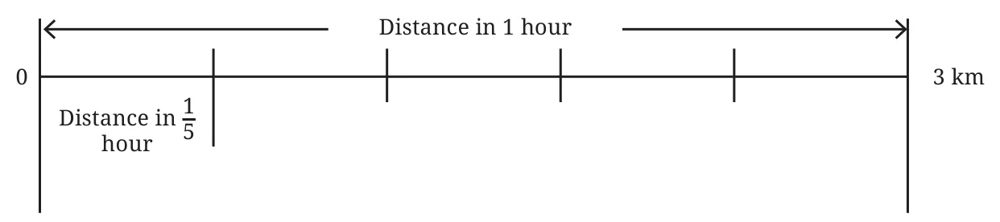
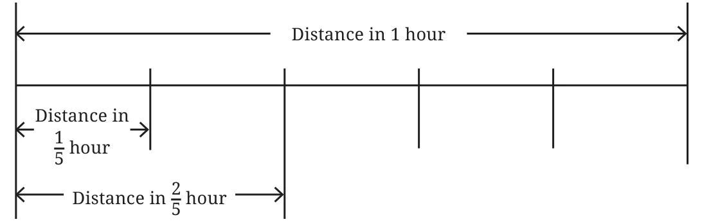
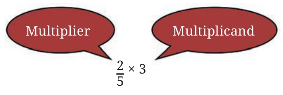

Aaron walks 3 kilometres in 1 hour. How far can he walk in 5 hours?
This is a simple question. We know that to find the distance, we need to find the product of 5 and 3, i.e., we multiply 5 and 3.
Distance covered in 1 hour \(= 3\) km.
Therefore, Distance covered in 5 hours
\(= 5 \times 3\) km
\(= 3 + 3 + 3 + 3 + 3\) km
\(= 15\) km.
Aaron’s pet tortoise walks at a much slower pace. It can walk only \(\frac{1}{4}\) kilometre in 1 hour. How far can it walk in 3 hours?
Here, the distance covered in an hour is a fraction. This does not matter. The total distance covered is calculated in the same way, as multiplication.

Distance covered in 1 hour \(= \frac{1}{4}\) km.
Therefore, distance covered in 3 hours \(= 3 \times \frac{1}{4}\) km
\(= \frac{1}{4} + \frac{1}{4} + \frac{1}{4}\) km \(= \frac{3}{4}\) km.
The tortoise can walk \(\frac{3}{4}\) km in 3 hours.
Let us consider a case where the time spent walking is a fraction of an hour. We saw that Aaron can walk 3 kilometres in 1 hour. How far can he walk in \(\frac{1}{5}\) hours?
We continue to calculate the total distance covered through multiplication.

Distance covered in \(\frac{1}{5}\) hours \(= \frac{1}{5} \times 3\) km.
Finding the product:
Distance covered in 1 hour \(= 3\) km.
In \(\frac{1}{5}\) hours, distance covered is equal to the length we get by dividing 3 km into 5 equal parts, which is \(\frac{3}{5}\) km.
This tells us that \(\frac{1}{5} \times 3 = \frac{3}{5}\).
How far can Aaron walk in \(\frac{2}{5}\) hours?
Once again, we have — Distance covered \(= \frac{2}{5} \times 3\) km.

Finding the product:
- We can first find the distance covered in \(\frac{1}{5}\) hours.
- Since, the duration \(\frac{2}{5}\) is twice \(\frac{1}{5}\), we multiply this distance by 2 to get the total distance covered.
Here is the calculation.
Distance covered in 1 hour \(= 3\) km.
- Distance covered in \(\frac{1}{5}\) hour
\(=\) The length we get by dividing 3 km in 5 equal parts
\(= \frac{3}{5}\) km.
- Multiplying this distance by 2, we get
\(2 \times \frac{3}{5} = \frac{6}{5}\) km.
From this we can see that
\(\frac{2}{5} \times 3 = \frac{6}{5}\).
